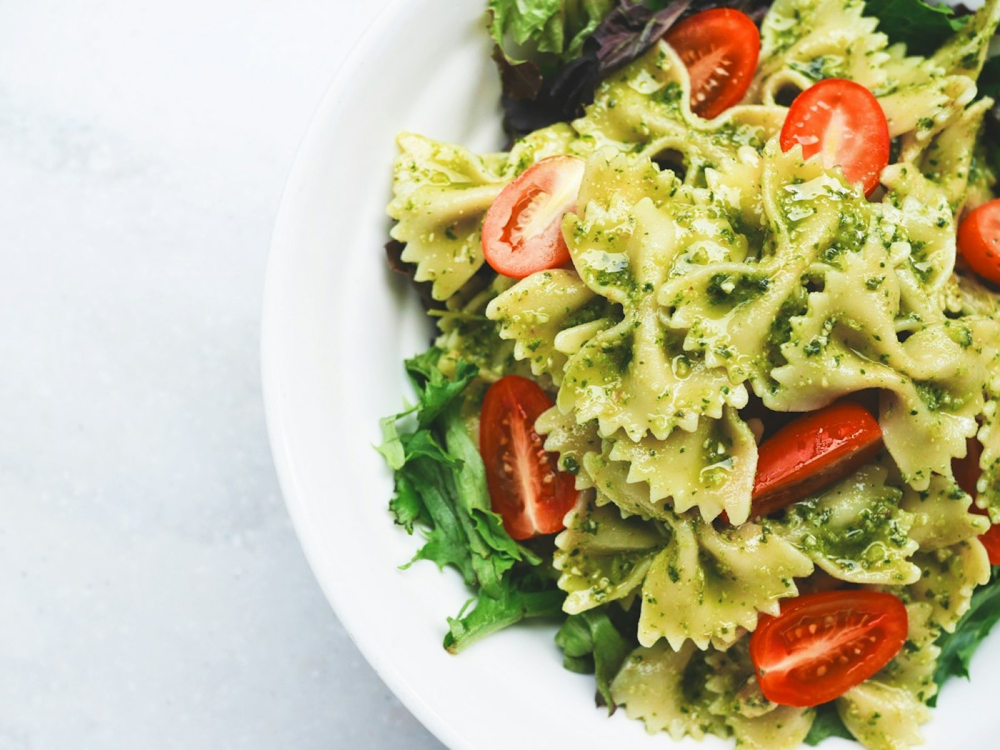
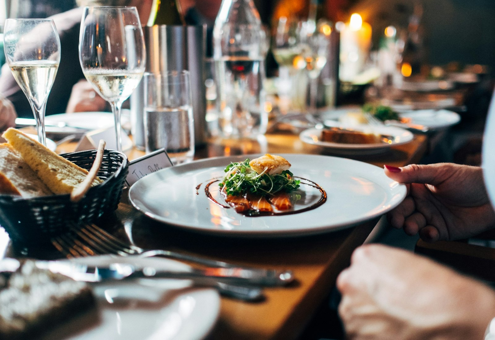

Italian Pasta
Bowties, basil pesto, and tomatoes finished with olive oil.
₪68
Tel Aviv · Evening service
Seasonal plates, a warm room, and a table that stays yours for the evening. Taste & Table cooks a short menu and serves it family style.
See the dishes
Tuesday to Sunday, 18:00–23:30. Closed Monday.
Taste & Table
18 HaYarkon Street
Tel Aviv, Israel
Write to hello@example.com or call the desk. This page does not take a booking.